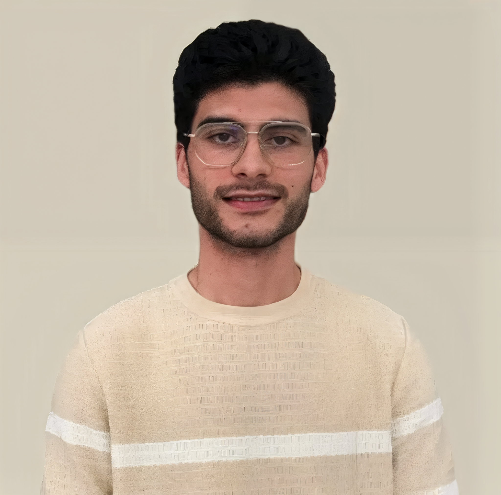

Mechanical Design
Functional analysis, mechanism design, component selection, mechanical sizing and design for practical manufacturing constraints.
MECHANICAL ENGINEER · CAD · SIMULATION
Mechanical Engineer
Specialized in mechanical design, CAD modeling and simulation, with a practical approach to developing high-performance mechanical solutions.

01 — ABOUT ME
Mechanical Engineer with a strong interest in mechanical design, CAD modeling and numerical simulation. Motivated, organized and analytical, I enjoy translating engineering requirements into robust and manufacturable solutions.
My academic and professional work has covered mechanical architecture, 3D modeling, mechanical sizing, resistance calculations, finite element analysis and prototyping across automotive, lifting, marine and manufacturing applications.
02 — EXPERTISE
Technical capabilities developed through engineering studies, internships, projects and hands-on work.
Functional analysis, mechanism design, component selection, mechanical sizing and design for practical manufacturing constraints.
3D part and assembly modeling using SolidWorks, CATIA and Fusion 360 for engineering concepts and detailed designs.
Numerical validation using ANSYS, Abaqus and RDM6, including structural behavior, material response and design verification.
Exposure to machining and assembly operations, CNC equipment and project development in a fabrication environment.
03 — SELECTED WORK
Selected academic and professional projects demonstrating design, analysis, simulation and problem-solving.

01 / AUTOMOTIVE APPLICATION
Final-year project at FOCUS Corporation: mechanical design and development of a testing robot for a curved automotive display. The mechanical solution combines a CoreXY motion system with a rectilinear cam/follower mechanism.

Mechanical design project completed at EMP, including SolidWorks modeling, RDM calculations, RDM6 numerical verification and component selection.
EMP · 2025
Functional study and 3D modeling in SolidWorks, with tipping mechanism and structure simulation in CATIA V5.
ENIT · 2025
Motorized floating system designed in SolidWorks with reinforced hydrodynamic stability, winch and gripping clamp.
ENIT · 2025
Forging and V-bending of sheet metal, plus an elasto-plastic tensile specimen study using Abaqus.
ENIT · 202504 — EXPERIENCE
Experience spanning engineering design, numerical analysis and mechanical workshop environments.
FOCUS Corporation · Tunis, Tunisia
Design and development of a curved linear motion testing robot for automotive applications. Mechanical design in SolidWorks, mechanical sizing and numerical validation using ANSYS.
EMP · Sfax, Tunisia
Development of a telescopic jib crane with 1T capacity, including 3D modeling, resistance calculations based on an RDM study, RDM6 verification, component selection and technical solution development.
MECAFORM-EHK Metal Forming · Sfax, Tunisia
Immersion in a mechanical production workshop with participation in machining and assembly operations and observation of lathe, milling and CNC machines.
05 — EDUCATION & LEADERSHIP
National School of Engineers of Tunis (ENIT), Tunisia
The Faculty of Sciences Sfax (FSS), Tunisia
FABLAB ENIT — CNC machine for PCBs, 3D scanner, automated storage cabinet and battery charger.
ENIT ECOCAR — Mechanical lead of the Tunisian team participating in the Shell Eco-marathon.
06 — CONTACT
I’m open to mechanical engineering opportunities, technical projects and collaborations.
Email me ↗GET IN TOUCH
kessemtinifedi51@gmail.com LinkedIn profile ↗ Tunisia · Available for engineering opportunities